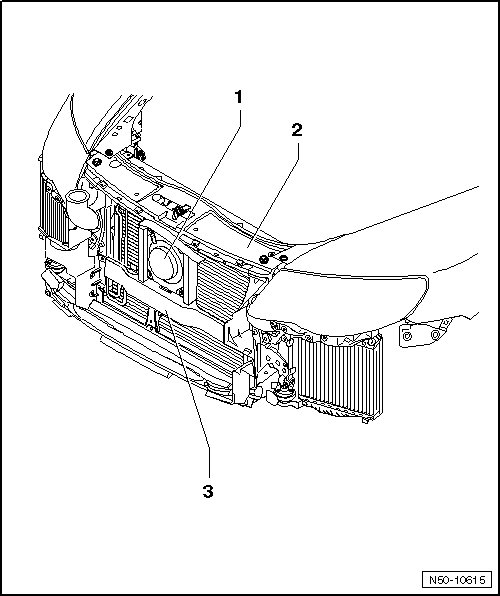

Lock Carrier Electronic Components and Installation Locations
Lock Carrier
Lock Carrier Electronic Components and Installation Locations

The distance regulation control module (J428) and the right distance regulation sensor (G259) - 1 - are installed on the lock carrier - 2 -.